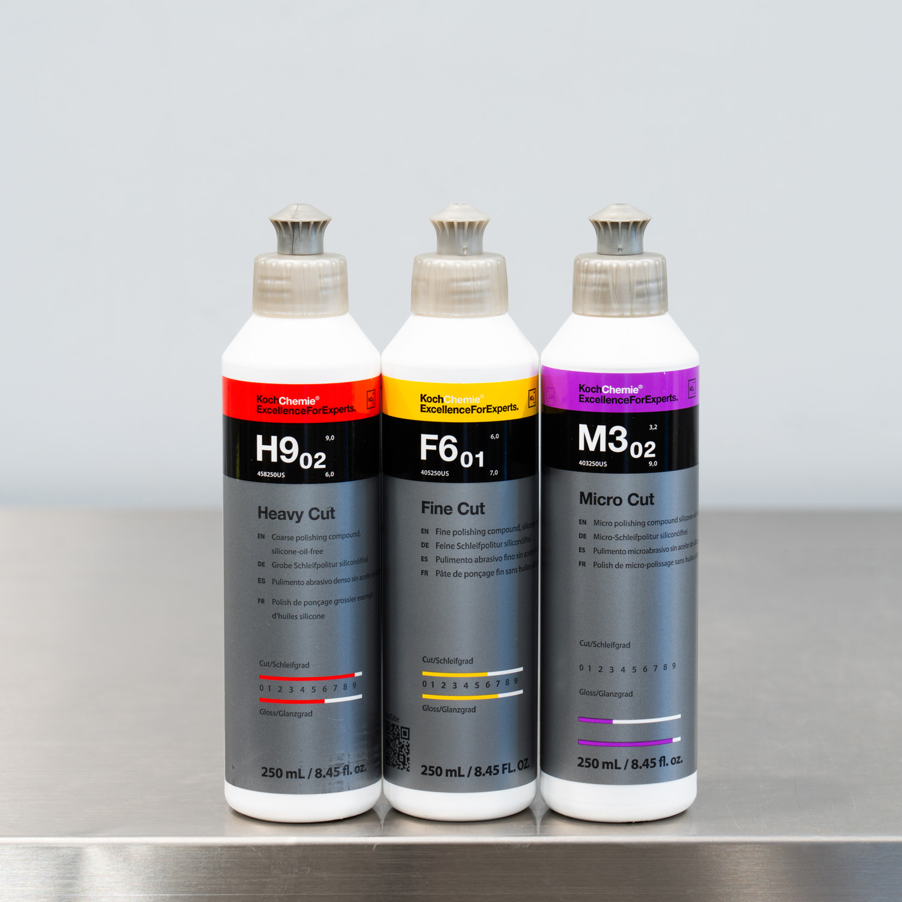

Expert Paint Correction Services
Restore your vehicle's paint to its original glory. We remove swirls, scratches, and oxidation for a flawless, better-than-new finish.

What is Paint Correction?
Paint correction is the process of removing imperfections from a vehicle's paintwork. This includes swirl marks, light scratches, water spots, and oxidation. Using specialized machines, pads, and polishing compounds, we carefully level the clear coat to restore a perfectly smooth, reflective surface.
Why is it Important?
- Restores Showroom Shine: The single most effective way to bring back your car's original gloss.
- Increases Resale Value: A vehicle with flawless paint is significantly more valuable.
- Prepares for Ceramic Coating: A corrected surface is essential for a proper ceramic coating bond.
- Removes Unsightly Blemishes: Eliminates the spiderwebs and swirls visible in direct sunlight.
Our Paint Correction Process
1. Assessment
We inspect your vehicle's paint with specialized lighting to identify all imperfections and measure paint depth.
2. Decontamination
A thorough wash and clay bar treatment removes all contaminants, ensuring a clean surface to work on.
3. Correction (Compounding)
We use a cutting compound to carefully remove deeper scratches and swirl marks from the paint.
4. Polishing
A fine polish is used to remove any hazing from the compounding step, revealing a deep, glossy finish.
Restore Your Car's Perfect Finish
Contact us for a free consultation and quote for our mobile paint correction services in LA and Orange County.
Get a Free Quote